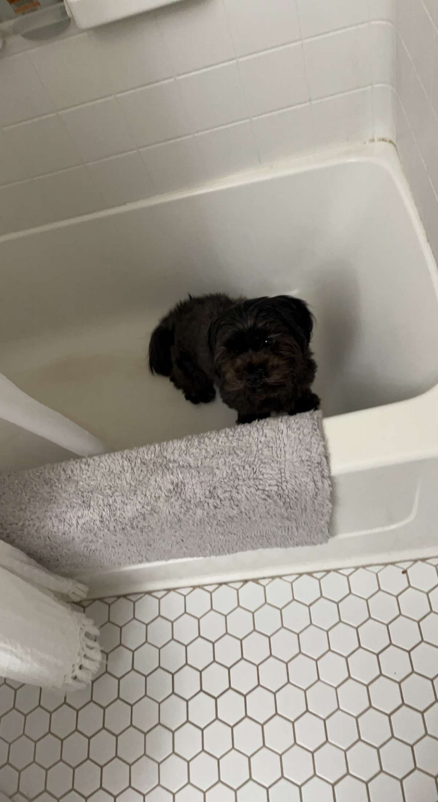

Hello, my name is Taylor. I've been born and raised in Arizona and have lived here for my whole life. I am 20 years old going into my junior year of college. I am a transfer student from NAU. One of my Hobbies is weightlifting. I've been lifting ever since I started highschool and I love it. I am majoring in computer science. I also love to learn as much as I can and as much programming languages I can to try to learn as much as I can. I work as a maintanance man at a highschool as a temp job while I attend college. I think that one of the major advantages of learning about careers in web design is that there is many different options and opportunities for all different paths.
This is a picture of my puppy, she is one and a half years old, and her name is Charollete.